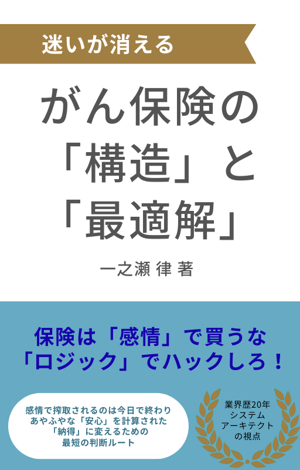

迷いが消える
がん保険の「構造」と「最適解」
複雑ながん保険の仕組みをロジカルに解き明かす、納得のためのガイドブック。
VIEW ON AMAZONシステム思考でノイズを削ぎ落とし、納得感のある保険選びをサポートします。

複雑ながん保険の仕組みをロジカルに解き明かす、納得のためのガイドブック。
VIEW ON AMAZON次作は「医療保険」をテーマに執筆中。あなたの備えをより確かなものにするために。
PREPARING...システムアーキテクト／コンサルタント。20年以上にわたり、保険会社の基幹システムの設計・構築に従事。 「複雑なものを、一番シンプルな形に整理する」というエンジニアの視点を活かし、保険選びに迷う人々へ向けて執筆活動を行っている。
本来の助け合いの仕組みとしての保険を尊重しつつ、営利的な競争によって増えすぎた情報のノイズを構造化し、読者が自らの手で「最適解」を選び取れるようサポートすることを目指している。